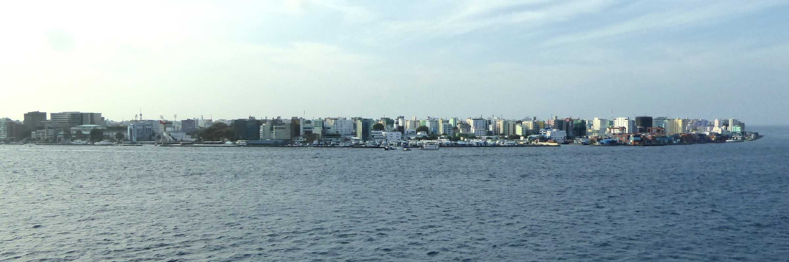
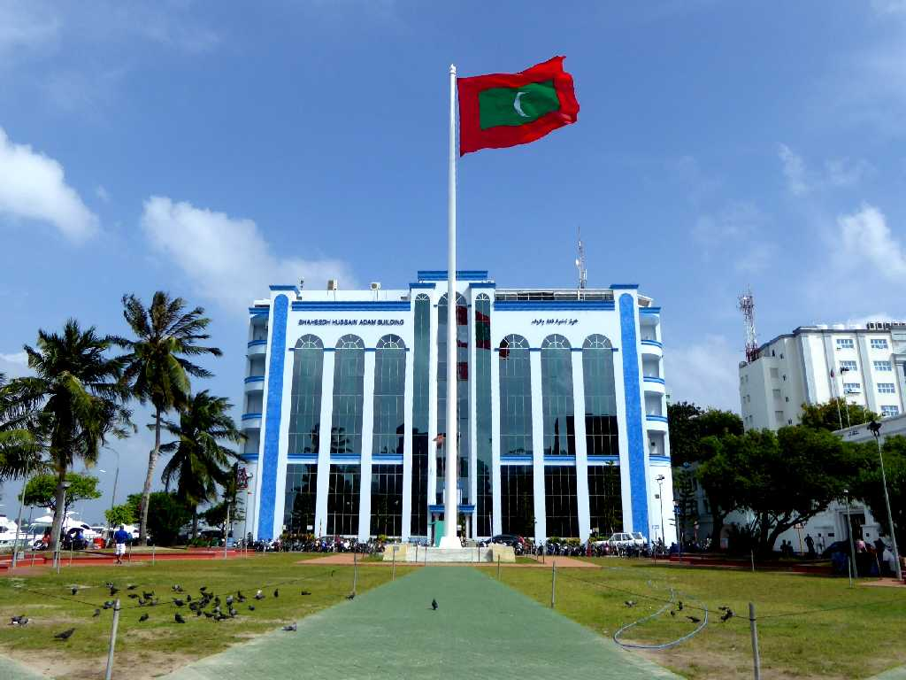
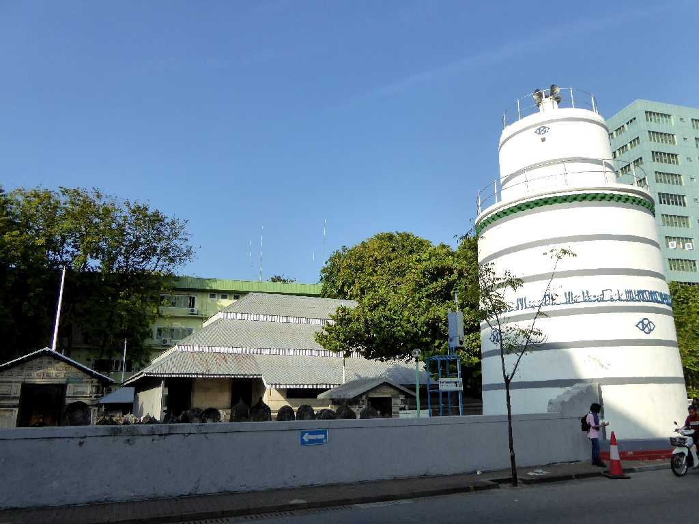
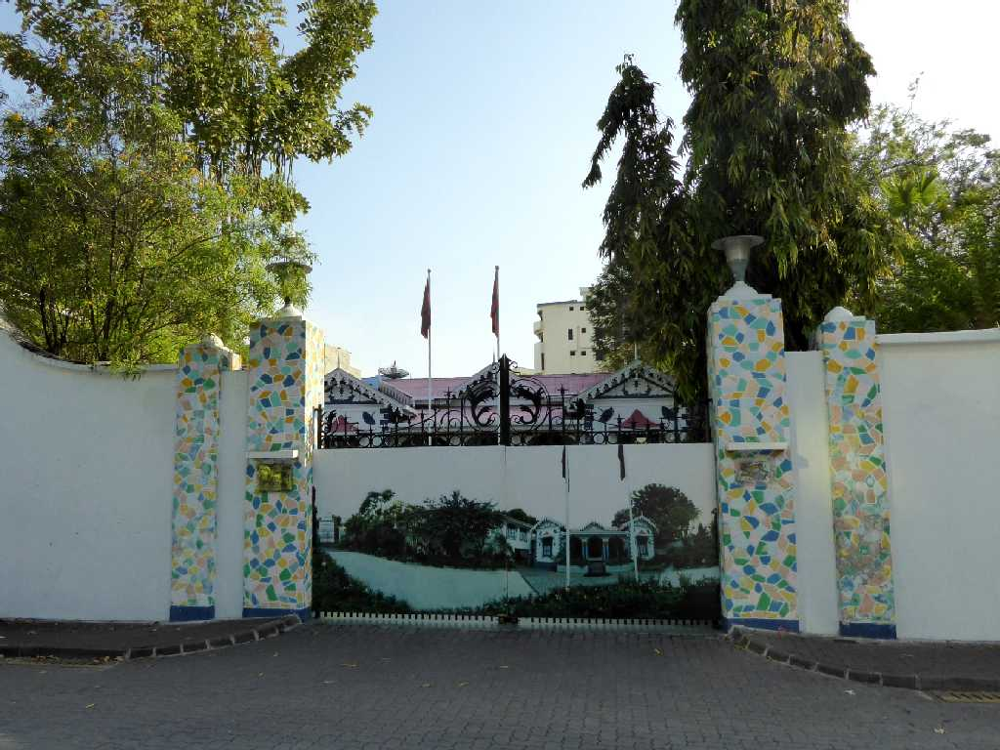
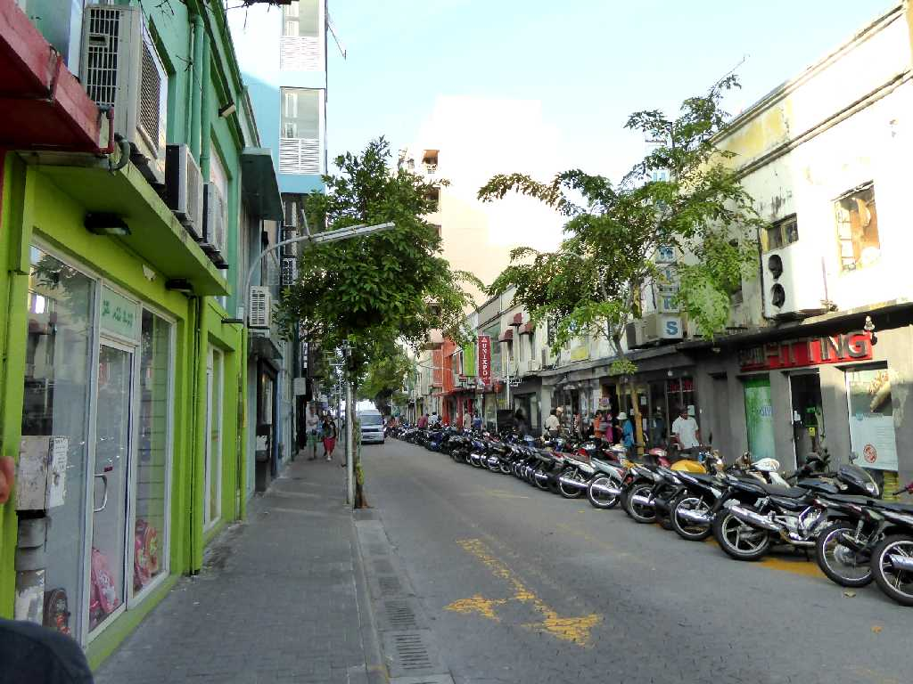
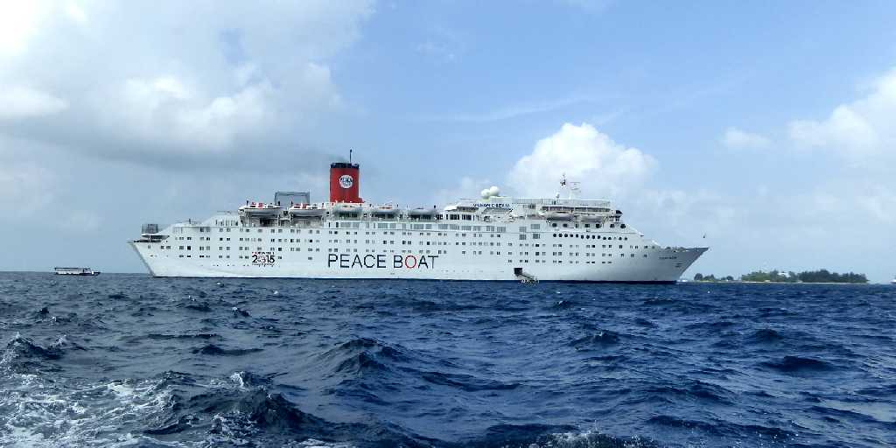
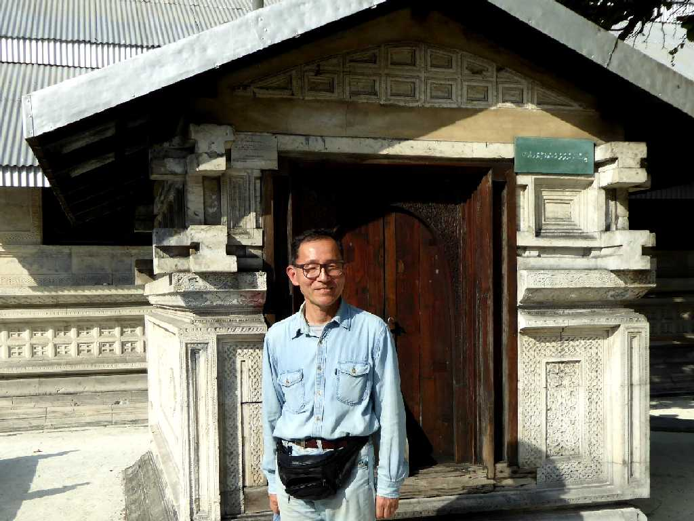

Male Island
マレ環礁のマレ島にあるモルジブの首都マレ市

Republic Square Male
１６世紀までマレとヒラリのスルタン王朝がありマレ市はマレ王国の中心地として発展してきた

Hukuru Miskiy

Muliaage

Main street Male

Ocean Dream Male off the coast
地球一周の船旅出港１９日目９,６６２ｋｍ航行しマレ沖に停泊

January 4 2016 Hukuru Miskiy